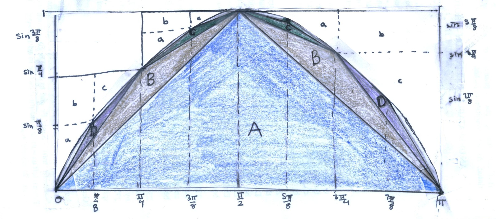
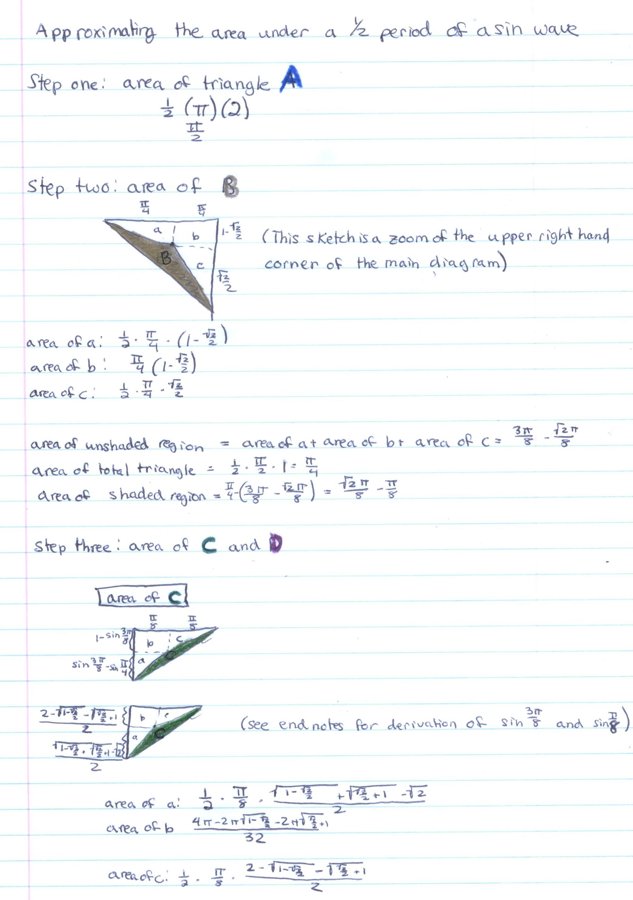
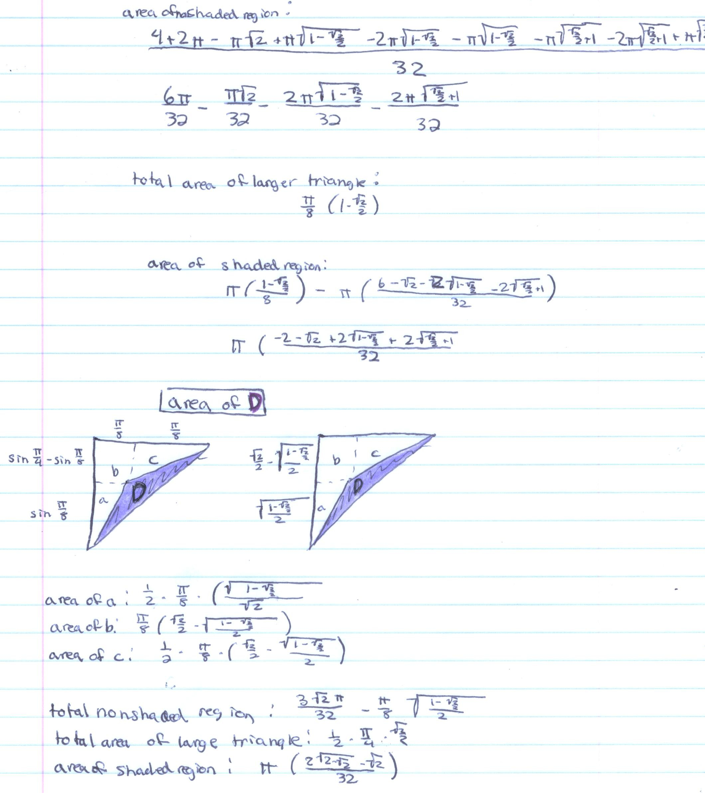
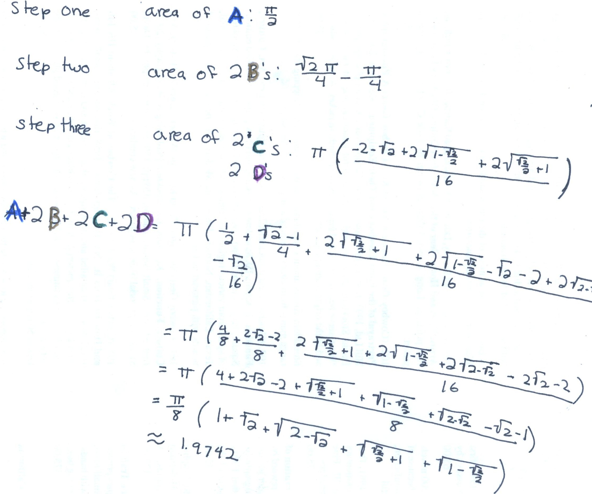
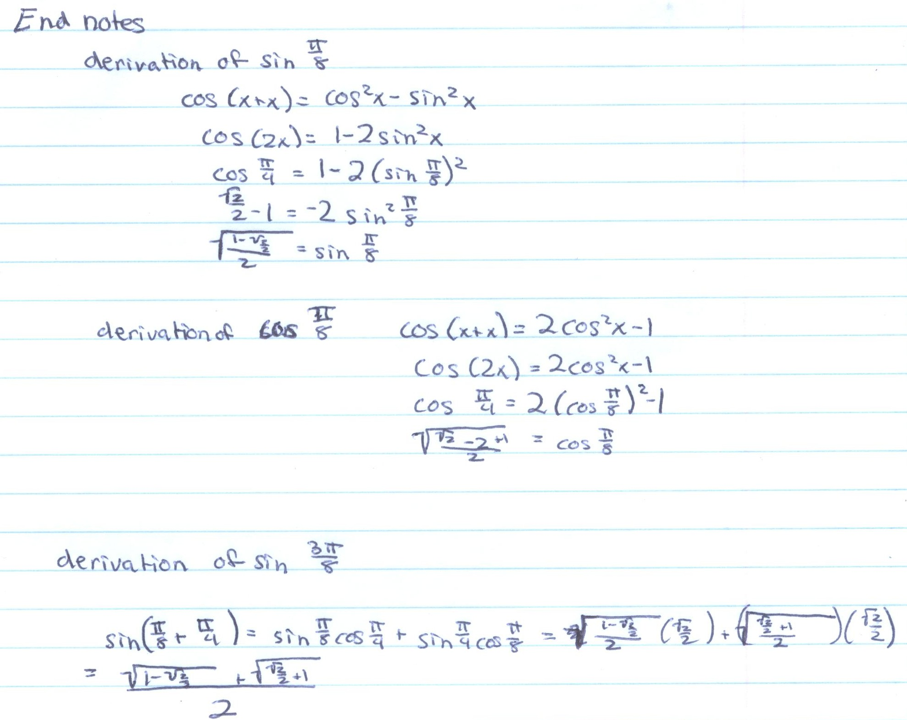
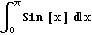
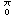

Katy finds the area under a sine wave from 0 to Pi
(She used the same method that Archimedes used to find the area of a parabolic segment, which she saw in Don's worksheet book).



Conclusions:

Note: Katy got an approximation of 1.9742 . The exact answer is 2, and Katy was off by only about 3/200 =1.5% !

Great job Katy!!!
Don's proof:  = -Cos[x]]  = -Cos[p]-(-Cos[0]) = 1+1 =2